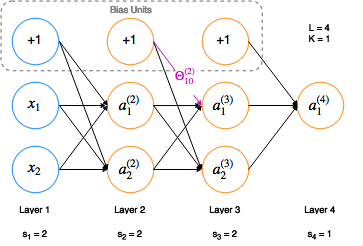

| Hypothesis |
|---|
| $$ \begin{align*}
h_\Theta(x) &= a^{(L)} = g(z^{(L)}) \\
z^{(l)} &= \Theta^{(l-1)}a^{(l-1)} \\
a^{(1)} &= x
\end{align*}
$$
where
$$ \begin{align*}
L &= \mbox{number of layers} \\
l &= \mbox{one layer in } [1..L] \\
g &= \mbox{sigmoid function} \\
a^{(l)} &= \mbox{activation vector of layer } l \\
\Theta^{(l)} &\in \mathbb{R}^{s_{(l+1)} \times (s_{l} + 1)}
\end{align*}
$$
|
| Cost Function |
|---|
| $$ \begin{align*}
J(\Theta) = & -\frac{1}{m}\left[ \sum_{i=1}^{m} \sum_{k=1}^{K} y_k^{(i)} log(h_\Theta(x^{(i)}))_k + (1-y_k^{(i)})log(1-(h_\Theta(x^{i}))_k) \right] \\
& + \frac{\lambda}{2m} \sum_{l=1}^{L-1} \sum_{i=1}^{s_l} \sum_{j=1}^{s_{l+1}} (\Theta_{ji}^{(l)})^2
\end{align*}
$$
where
$$ \begin{align*}
s_l &= \mbox{# of units (not counting bias unit) in layer } l \\
s_L &= \mbox{# of output units } = K \\
\Theta_{ji}^{(l)} &= \mbox{weight from layer } l \mbox{ mapping } a_{i}^{(l)} \mbox { to } a_{j}^{(l+1)}
\end{align*}
$$
|
| Example |
|---|
|

|
| Algorithms |
|---|
- Backpropagation
$$ \begin{align*}
D_{ij}^{(l)} &:= \frac{1}{m} \Delta_{ij}^{(l)} & (j = 0)\\
D_{ij}^{(l)} &:= \frac{1}{m} \left[ \Delta_{ij}^{(l)} + \lambda\Theta_{ij}^{(l)} \right] & (j \neq 0)
\end{align*}
$$
where
$$ \begin{align*}
\Delta_{ij}^{(l)} &:= \Delta_{ij}^{(l)} + a_{j}^{(l)}\delta_{i}^{(l+1)} \\
\end{align*}
$$
and
$$ \begin{align*}
\delta_{i}^{(l)} &= \mbox{'error' of node } i \mbox{ in layer } l \\
\delta^{(L)} &= a^{(L)} - y &\\
\delta^{(l)} &= ((\Theta^{(l)})^T \delta^{(l+1)}) .* a^{(l)}.*(1-a^{(l)})
\end{align*}
$$
|